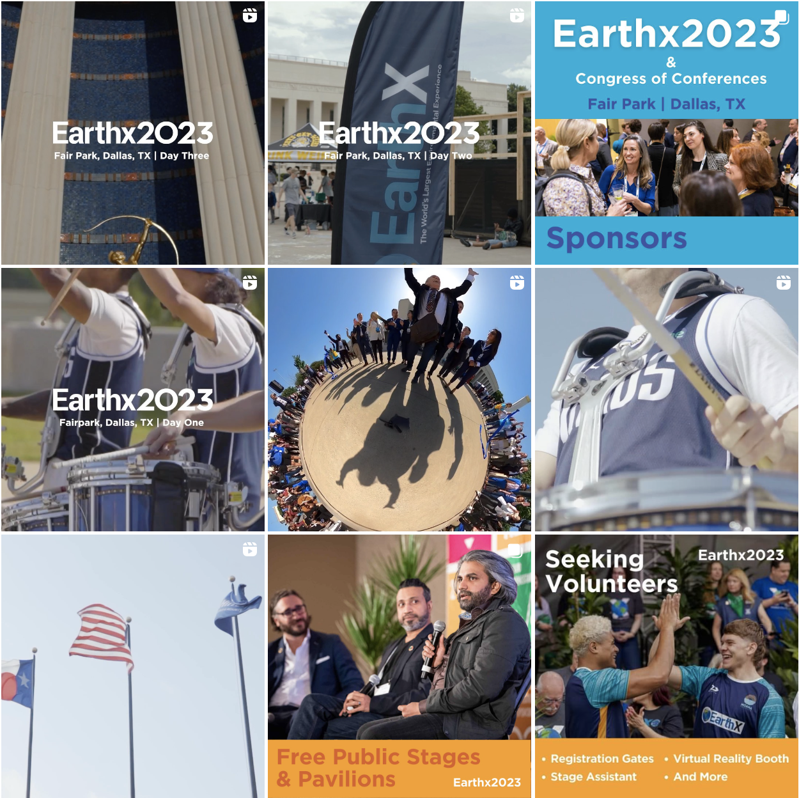
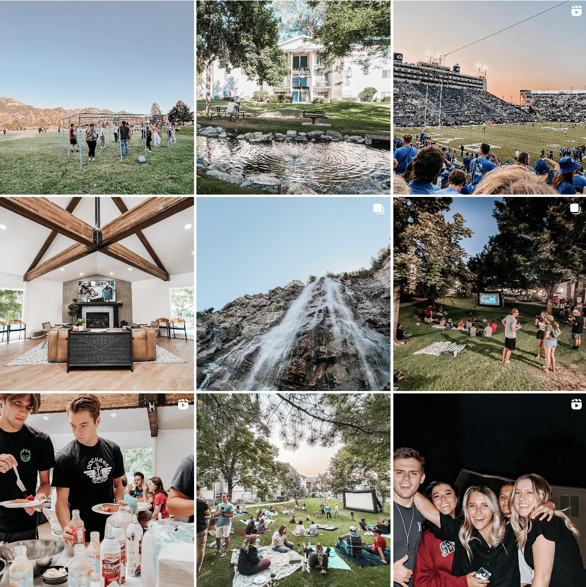
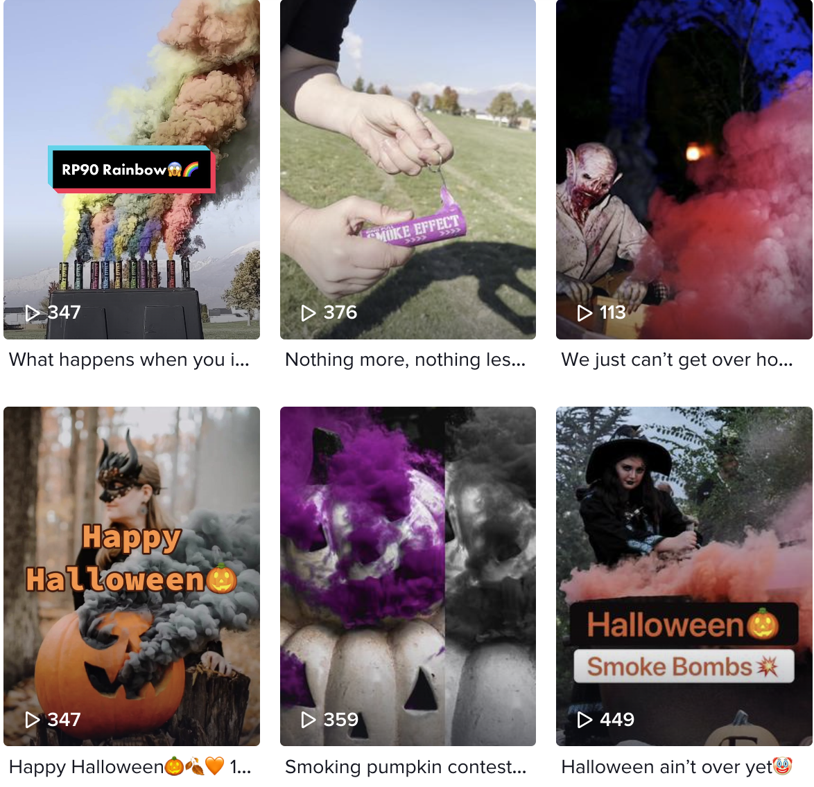
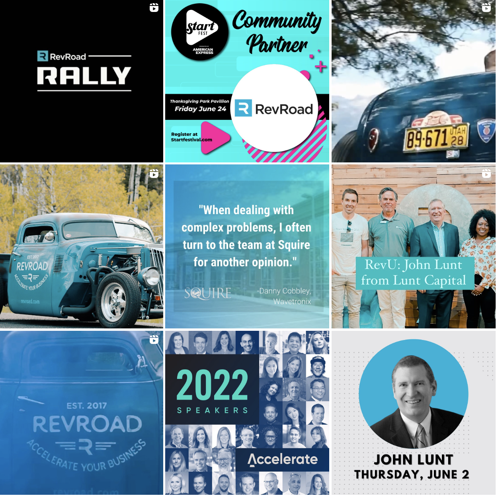
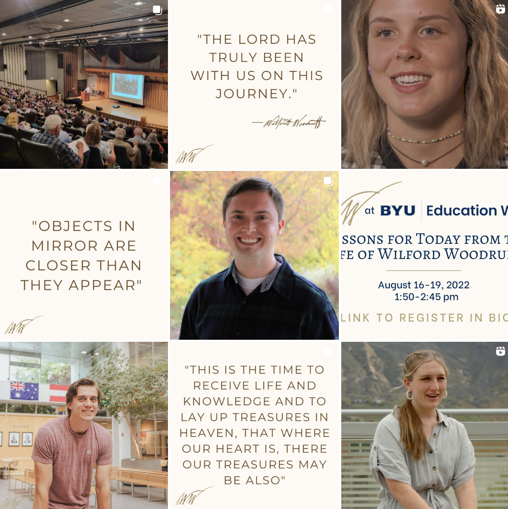
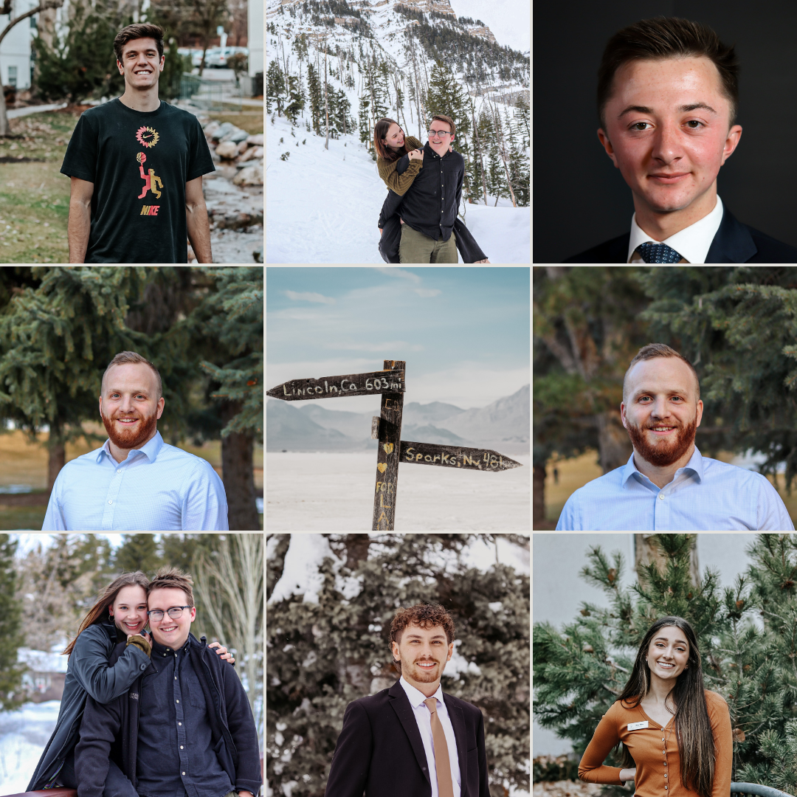

Luke Hauver - Portfolio
Menu
Home
Experience
Portfolio
Contact
My Portfolio
Earthx
▪ Reached 86,099 individuals through the @Earthxorg-owned social media handles, during the duration of Earthx2023 (FB, IG, LinkedIn, & Twitter)
▪ Gained 1,188 new social media followers across several platforms through brand research with Sprinklr social media listening, creation and implementation of SWOT analysis and organic content creation
▪ Assisted in attaining a 10,000+ attendance for Earthx2023 in Dallas, TX by leading an on-site social media activation, capturing real-time content, and collaborating with Earthx2023 Sponsors, Exhibitors, Speakers, and Earthx subsidiaries (EarthxFilm & EarthxLatin)

Raintree
▪ Reached 18,165 unique Instagram accounts by leveraging the creation and management of social media content
▪ Obtained a 30% increase in property event attendance through social media event promotion

Smoke Effect
▪ Improved TikTok profile views by 21% by creating organic viral content
▪ Optimized a 40% email open rate through design and optimizing messages to targeted customer groups
▪ Grew post interaction by 118% through personalized video content

RevRoad
▪ Attained 3,000+ individuals of attendance at a Utah community event through organic social media campaign
▪ Developed market research skills by teaching myself how to use Pitchbook to conduct company valuation research
▪ Achieved 300% more customers for portfolio company through social media account management

Wilford Woodruff Papers
▪ Expanded social media reach and post engagement by 30% by producing a new social media content strategy and engagement campaign and influencer campaign
▪ Achieved 50% more exposure to the press by developing press releases and contacting different press/media outlets

Photoshoots
▪ Personal photoshoots I have done
